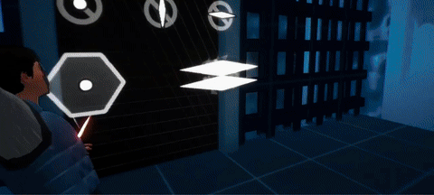
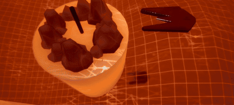
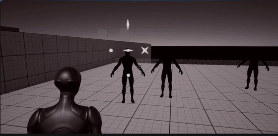
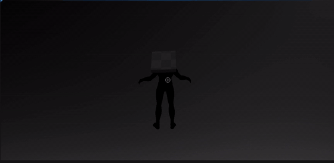
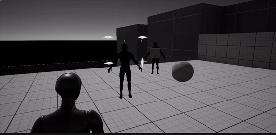
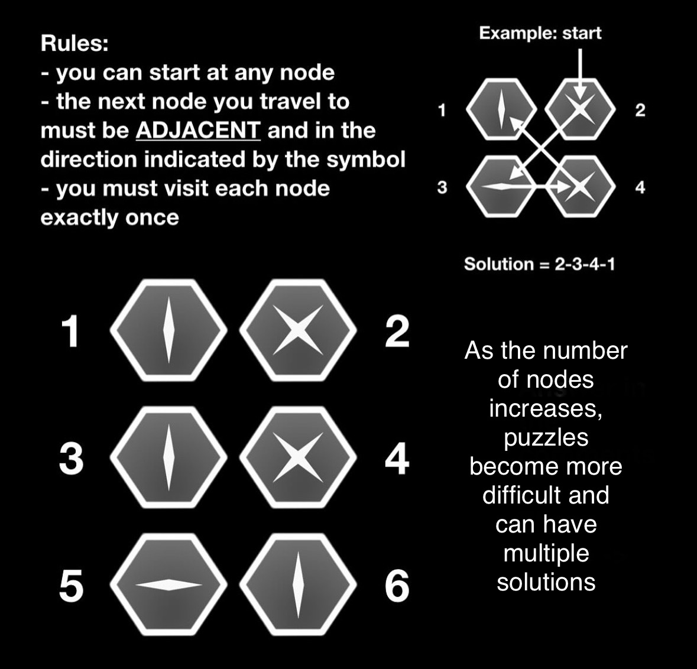
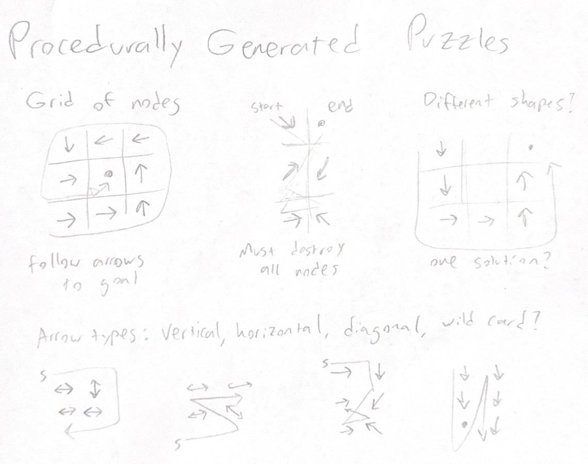
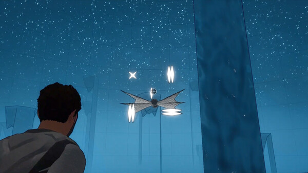
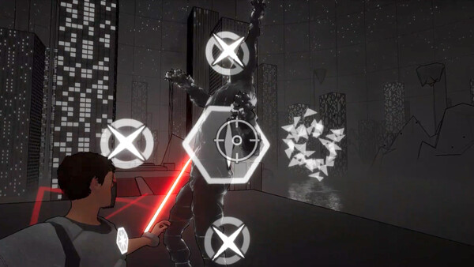

Node Strike: Procedurally Generated Puzzle-Combat (solo project)


Node Strike is a 3D combat-puzzle game where you defeat enemies by solving puzzles. This required inventing a brand new type of puzzle and an algorithm to generate them. The game is about 3 hours long with 22 levels, 5 multi-stage boss fights, 12 puzzle types, and 12 enemy types.
Prototyping, Testing, and Iterating



I built the first prototype of the puzzle-combat mechanic in about a month and invited all of my friends to try it out. I already had a few ideas for variables to tweak, such as the time limit between destroying each node, the camera's FOV when showing the puzzles, and the aggressiveness of the enemies. However, while watching my friends play (and taking detailed notes), I discovered two interactions I hadn't considered:
- Players would spend a long time studying an enemy from a distance while in no real danger.
- Players would guess the solution to non-enemy puzzles so that the puzzle would reset and they would get an easier one.
Players tend to drift toward the optimal strategy even if it isn't fun, so I had to design the game so that the optimal strategy was my intended experience. To do this, I added ranged attacks to the enemies to put pressure on the player and encourage them to solve the puzzle faster. I also tuned encounters to include more enemies, making it harder to just study one from a distance. To solve the guessing problem, I gave non-enemy puzzles a three-second delay before resetting. This subtle change made guessing much less optimal and encouraged players to solve each puzzle on the first try. I learned that it's the developer's responsibility to guide players toward the most fun playstyle and to prevent boring optimal strategies.
Designing Puzzles and Levels



Using graph theory, I built a unique puzzle-combat system that tests the player’s ability to think critically under pressure. To solve a puzzle, the player must find the correct order to destroy every node such that the next node they destroy is in the direction indicated by the symbol. During gameplay the player must dodge attacks while solving the puzzle in their head. Once they think they have the solution, they can jump in and try it out. The algorithm that generates these puzzles begins with the solution, the last node destroyed, and then iteratively fills in the puzzle backwards, ensuring that puzzles are always solvable.
Teaching this system to the player was a challenge, because explaining a complex puzzle system all at once can be overwhelming. Instead, I designed levels that slowly explained the whole system. For example, in the first level, the player is shown a non-enemy puzzle that they must solve to proceed. Failing this puzzle has no punishment. After this, they are presented with an easy enemy that is killed with the same system. Next, the player is taught that they can zip to faraway puzzles and must demonstrate that they understand this to continue. Lastly, the player is faced with multiple enemies and must use everything they learned to complete the level.
Transforming a Life Experience into a Game


In high school I participated in Academic Quiz Bowl. The questions were long paragraphs that gave increasingly direct clues towards the answer. I fell in love with the feeling of solving the clues and buzzing in as soon as I knew the answer, and I wanted to convey this feeling in a game. I knew replicating this would require a nearly infinite number of quick puzzles. My goal was to encourage a playstyle that made the player feel smart each time they solved one. I decided to frame these puzzles as enemies in a 3rd-person action game so I could use movement and enemy attacks to put pressure on the player instead of using a timer. I designed levels to slowly introduce these complex mechanics. I also designed light platforming and environmental puzzle solving to break up the high-pressure combat encounters and boss fights.
Lessons Learned
The biggest lesson I learned is that I am responsible for how the player behaves, even if the player chooses a playstyle that isn't fun. If I have a vision for an experience I want to convey to the player, I need to design the mechanics and encounters so that the optimal playstyle is the one that matches my vision. This usually requires punishing players who try another playstyle (like cheesing or save-scumming) or nerfing boring playstyles to make them suboptimal.
I also learned about teaching complex mechanics to players. When I observed playtesters struggling to understand the puzzle mechanic, I designed levels that slowly introduced the puzzle system piece by piece. Each piece is first introduced in a safe environment before being combined with other pieces until the player understands the full system.